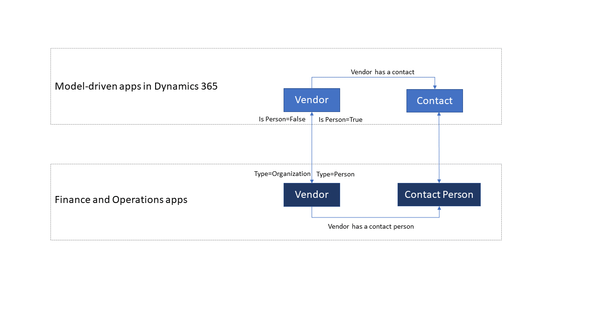
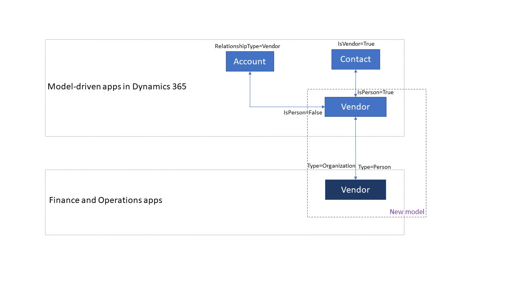

Integrierte Masterdaten von Kreditoren
[!include[banner](../../includes/banner.md)][!include[rename-banner](~/includes/cc-data-platform-banner.md)]Der Begriff Lieferant bezieht sich auf eine Lieferantenorganisation oder einen Einzelunternehmer, der Waren oder Dienstleistungen an ein Unternehmen liefert. Der Begriff Lieferant ist zwar in Microsoft Dynamics 365 Supply Chain Management ein etabliertes Konzept, in in modellgesteuerten Apps in Dynamics 365 gibt es dieses Konzept aber nicht. Sie können jedoch die Entität Konto/Kontakt zum Speichern von Lieferanteninformationen überladen. Die integrierten Masterdaten von Kreditoren führen ein explizites Kreditorenkonzept in modellgesteuerten Apps in Dynamics 365 ein. Sie können entweder das neue Lieferantendesign verwenden oder Lieferantendaten in der Entität Konto/Kontakt speichern. Duales Schreiben unterstützt beide Ansätze.
In beiden Ansätzen werden die Lieferantendaten zwischen Dynamics 365 Supply Chain Management, Dynamics 365 Sales, Dynamics 365 Field Service, und Power Apps-Portalen integriert . In Supply Chain Management stehen die Daten für Workflows wie Bestellanforderungen und Bestellungen zur Verfügung.
Kreditorendatenfluss
Wenn Sie Daten nicht in der Entität Konto/Kontakt in Dataverse speichern möchten, können Sie das neue Lieferantendesign verwenden.

Wenn Sie Daten weiterhin in der Entität Konto/Kontakt speichern möchten, können Sie das erweiterte Lieferantendesign verwenden. Um das erweiterte Lieferantendesign zu verwenden, müssen Sie die Herstellerworkflows im Lösungspaket für duales Schreiben konfigurieren. Weitere Informationen finden Sie unter Wechsel zwischen Kreditorendesigns.

Tip
Wenn Sie Power Apps-Portale für Self-Service-Kreditoren verwenden, können die Kreditoreninformationen direkt an Finance and Operations-Apps weitergeleitet werden.
Vorlagen
Kreditorendaten enthalten alle Informationen über den Kreditor, z. B. die Kreditorengruppe, Adressen, Kontaktinformationen, das Zahlungsprofil und das Rechnungsprofil. Eine Sammlung von Tabellenzuordnungen arbeitet während der Interaktion der Kreditorendaten zusammen, wie in der folgenden Tabelle dargestellt.
| Finance and Operations Apps | Sonstige Dynamics 365-Apps | Beschreibung |
|---|---|---|
| Kreditor V2 | Konto | Unternehmen, die die Kontoentität verwenden, um Kreditorendaten speichern, können diese weiterhin auf die gleiche Weise verwenden. Sie können auch die explizite Lieferantenfunktion nutzen, die dank der Integration von Finance and Operations Apps zur Verfügung stehen. |
| Kreditor V2 | Msdyn_vendors | Unternehmen, die eine benutzerdefinierte Lösung für Lieferanten verwenden, können das vordefinierte Lieferantenkonzept nutzen, das in Dataverse durch die Integration von Finance and Operations Apps eingeführt wird. |
| Kreditorengruppen | msdyn_vendorgroups | Diese Vorlage synchronisiert Lieferantengruppeninformationen. |
| Kreditorzahlungsmethode | msdyn_vendorpaymentmethods | Diese Vorlage synchronisiert Informationen zu den Zahlungsmethoden für Lieferanten. |
| CDS-Kontakte V2 | Kontakte | Die Vorlage Kontakte synchronisiert alle primären, sekundären und tertiären Kontaktinformationen für Kunden und Lieferanten. |
| Zahlungsplanpositionen | msdyn_paymentschedulelines | Diese Vorlage Zahlungsplanpositionen synchronisiert die Referenzdaten für Kunden und Lieferanten. |
| Zahlungsplan | msdyn_paymentschedules | Die Vorlage Zahlungspläne synchronisiert die Referenzdaten für Zahlungspläne sowohl für Kunden als auch für Lieferanten. |
| Zahlungstagpositionen CDS V2 | msdyn_paymentdaylines | Die Vorlage Zahlungstagpositionen synchronisiert die Referenzdaten für Zahlungstagpositionen für Kunden und Lieferanten. |
| Zahlungstage CDS | msdyn_paymentdays | Die Vorlage Zahlungstage synchronisiert die Referenzdaten für Zahlungstage sowohl für Kunden als auch für Lieferanten. |
| Zahlungsbedingungen | msdyn_paymentterms | Die Vorlage Zahlungsbedingungen synchronisiert die Referenzdaten für Zahlungsbedingungen sowohl für Kunden als auch für Lieferanten. |
| Namensaffixe | msdyn_nameaffixes | Die Vorlage Namensaffixe synchronisiert die Referenzdaten für Namensaffixe sowohl für Kunden als auch für Lieferanten. |
Kreditoren V2 zu msdyn_vendors
Diese Vorlage synchronisiert Daten zwischen Finance and Operations-Apps und Common Data Service.
| Finance and Operations-Feld | Zuordnungstyp | Anderes Dynamics 365-Feld | Standardwert |
|---|---|---|---|
| VENDORACCOUNTNUMBER | = | msdyn_vendoraccountnumber | |
| VENDORGROUPID | = | msdyn_vendorgroupid.msdyn_vendorgroup | |
| VENDORORGANIZATIONNAME | = | msdyn_name | |
| VENDORPARTYTYPE | >< | msdyn_isperson | |
| PERSONFIRSTNAME | = | msdyn_firstname | |
| PERSONLASTNAME | = | msdyn_lastname | |
| CREDITLIMIT | = | msdyn_vendorcreditlimit | |
| ISFOREIGNENTITY | >< | msdyn_isforeignentity | |
| ISONETIMEVENDOR | >< | msdyn_isonetimevendor | |
| ADDRESSBUILDINGCOMPLIMENT | = | msdyn_addressbuildingcompliment | |
| PERSONCHILDRENNAMES | = | msdyn_childrennames | |
| ADDRESSCITY | = | msdyn_addresscity | |
| ADDRESSCOUNTRYREGIONID | = | msdyn_addresscountryregionid | |
| ADDRESSCOUNTRYREGIONISOCODE | = | msdyn_addresscountryregionisocode | |
| ADDRESSCOUNTYID | = | msdyn_addresscountyid | |
| CREDITRATING | = | msdyn_creditrating | |
| ADDRESSDESCRIPTION | = | msdyn_addressdescription | |
| ADDRESSDISTRICTNAME | = | msdyn_addressdistrictname | |
| DUNSNUMBER | = | msdyn_dunsnumber | |
| ETHNICORIGINID | = | msdyn_ethnicorigin | |
| FORMATTEDPRIMARYADDRESS | = | msdyn_formattedprimaryaddress | |
| PERSONHOBBIES | = | msdyn_hobbies | |
| PERSONINITIALS | = | msdyn_initials | |
| LANGUAGEID | >< | msdyn_language | |
| PERSONLASTNAMEPREFIX | = | msdyn_lastnameprefix | |
| PERSONMIDDLENAME | = | msdyn_middlename | |
| ORGANIZATIONNUMBER | = | msdyn_organizationnumber | |
| OURACCOUNTNUMBER | = | msdyn_ourvendoraccountnumber | |
| PAYMENTID | = | msdyn_paymentid | |
| PERSONPHONETICFIRSTNAME | = | msdyn_phoneticfirstname | |
| PERSONPHONETICMIDDLENAME | = | msdyn_phoneticmiddlename | |
| PERSONPHONETICLASTNAME | = | msdyn_phoneticlastname | |
| ORGANIZATIONPHONETICNAME | = | msdyn_organizationphoneticname | |
| ADDRESSPOSTBOX | = | msdyn_addresspostbox | |
| PRIMARYURL | = | msdyn_primarycontacturl | |
| PRIMARYEMAILADDRESS | = | msdyn_primaryemailaddress | |
| PRIMARYEMAILADDRESSDESCRIPTION | = | msdyn_primaryemailaddressdescription | |
| PRIMARYFACEBOOK | = | msdyn_primaryfacebook | |
| PRIMARYFACEBOOKDESCRIPTION | = | msdyn_primaryfacebookdescription | |
| PRIMARYFAXNUMBER | = | msdyn_primaryfaxnumber | |
| PRIMARYFAXNUMBERDESCRIPTION | = | msdyn_primaryfaxnumberdescription | |
| PRIMARYFAXNUMBEREXTENSION | = | msdyn_primaryfaxnumberextension | |
| PRIMARYLINKEDIN | = | msdyn_primarylinkedin | |
| PRIMARYLINKEDINDESCRIPTION | = | msdyn_primarylinkedindescription | |
| PRIMARYPHONENUMBER | = | msdyn_pimaryphonenumber | |
| PRIMARYPHONENUMBERDESCRIPTION | = | msdyn_primaryphonenumberdescription | |
| PRIMARYPHONENUMBEREXTENSION | = | msdyn_primaryphonenumberextension | |
| PRIMARYTELEX | = | msdyn_primarytelex | |
| PRIMARYTELEXDESCRIPTION | = | msdyn_primarytelexdescription | |
| PRIMARYTWITTER | = | msdyn_primarytwitter | |
| PRIMARYTWITTERDESCRIPTION | = | msdyn_primarytwitterdescription | |
| PRIMARYURLDESCRIPTION | = | msdyn_primaryurldescription | |
| PERSONPROFESSIONALSUFFIX | = | msdyn_professionalsuffix | |
| PERSONPROFESSIONALTITLE | = | msdyn_professionatitle | |
| ADDRESSSTATEID | = | msdyn_addressstateid | |
| ADDRESSSTREET | = | msdyn_addressstreet | |
| ADDRESSSTREETNUMBER | = | msdyn_addressstreetnumber | |
| VENDORKNOWNASNAME | = | msdyn_vendorknownasname | |
| ADDRESSZIPCODE | = | msdyn_addresszipcode | |
| DEFAULTPAYMENTDAYNAME | = | msdyn_defaultpaymentdayname.msdyn_name | |
| DEFAULTPAYMENTSCHEDULENAME | = | msdyn_paymentschedule.msdyn_name | |
| DEFAULTPAYMENTTERMSNAME | = | msdyn_paymentterms.msdyn_name | |
| HASONLYTAKENBIDS | >< | msdyn_hasonlytakenbids | |
| ISMINORITYOWNED | >< | msdyn_isminorityowned | |
| ISVENDORLOCALLYOWNED | >< | msdyn_isvendorlocallyowned | |
| ISSERVICEVETERANOWNED | >< | msdyn_isserviceveteranowned | |
| ISOWNERDISABLED | >< | msdyn_ownerisdisabled | |
| ISWOMANOWNER | >< | msdyn_womanowner | |
| PERSONANNIVERSARYDAY | = | msdyn_personanniversaryday | |
| PERSONANNIVERSARYYEAR | = | msdyn_anniversaryyear | |
| PERSONBIRTHDAY | = | msdyn_birthday | |
| PERSONBIRTHYEAR | = | msdyn_birthyear | |
| ORGANIZATIONEMPLOYEEAMOUNT | = | msdyn_numberofemployees | |
| VENDORHOLDRELEASEDATE | = | msdyn_vendoronholdreleasedate | |
| VENDORPARTYNUMBER | = | msdyn_vendorpartynumber | |
| ADDRESSLOCATIONID | = | msdyn_addresslocationid | |
| PERSONANNIVERSARYMONTH | = | msdyn_vendorpersonanniversarymonth | |
| PERSONBIRTHMONTH | = | msdyn_vendorpersonbirthmonth | |
| PERSONMARITALSTATUS | >< | msdyn_maritalstatus | |
| ADDRESSLATITUDE | >> | msdyn_addresslatitude | |
| ADDRESSLONGITUDE | >> | msdyn_addresslongitude | |
| ONHOLDSTATUS | >< | msdyn_onholdstatus | |
| CURRENCYCODE | = | msdyn_currencycode.isocurrencycode | |
| ISVENDORLOCATEDINHUBZONE | >< | msdyn_isvendorlocatedinhubzone | |
| DEFAULTVENDORPAYMENTMETHODNAME | = | msdyn_vendorpaymentmethod.msdyn_name | |
| INVOICEVENDORACCOUNTNUMBER | = | msdyn_invoicevendoraccountnumber.msdyn_vendoraccountnumber | |
| PERSONGENDER | >< | msdyn_gender | |
| AREPRICESINCLUDINGSALESTAX | >< | msdyn_priceincludessalestax | |
| SALESTAXGROUPCODE | = | msdyn_taxgroup.msdyn_name | |
| PRIMARYCONTACTPERSONID | = | msdyn_vendorprimarycontactperson.msdyn_contactpersonid |
Kreditorengruppen zu msdyn_vendorgroups
Diese Vorlage synchronisiert Daten zwischen Finance and Operations-Apps und Common Data Service.
| Finance and Operations-Feld | Zuordnungstyp | Anderes Dynamics 365-Feld | Standardwert |
|---|---|---|---|
| DEFAULTPAYMENTTERMNAME | = | msdyn_paymentterms.msdyn_name | |
| DESCRIPTION | = | msdyn_description | |
| VENDORGROUPID | = | msdyn_vendorgroup | |
| CLEARINGPERIODPAYMENTTERMNAME | = | msdyn_clearingperiodpaymentpermname.msdyn_name |
Kreditorenzahlungsmethode zu msdyn_vendorpaymentmethods
Diese Vorlage synchronisiert Daten zwischen Finance and Operations-Apps und Common Data Service.
| Finance and Operations-Feld | Zuordnungstyp | Anderes Dynamics 365-Feld | Standardwert |
|---|---|---|---|
| NAME | = | msdyn_name | |
| DESCRIPTION | = | msdyn_description | |
| SUMBYPERIOD | >< | msdyn_sumbyperiod | |
| DISCOUNTGRACEPERIODDAYS | = | msdyn_discountgraceperioddays | |
| PAYMENTSTATUS | >< | msdyn_paymentstatus | |
| ALLOWPAYMENTCOPIES | >< | msdyn_allowpaymentcopies | |
| PAYMENTTYPE | >< | msdyn_paymenttype | |
| LASTFILENUMBER | = | msdyn_lastfilenumber | |
| LASTFILENUMBERTODAY | = | msdyn_lastfilenumbertoday | |
| ACCOUNTTYPE | >< | msdyn_accounttype | |
| BRIDGINGPOSTINGENABLED | >< | msdyn_bridgingposting | |
| ENABLEPOSTDATEDCHECKCLEARINGPOSTING | >< | msdyn_postdatedcheckclearingposting | |
| PROMISSORYNOTEDRAFTTYPE | >< | msdyn_promissorynotedrafttype | |
| DIRECTDEBIT | >< | msdyn_directdebit |